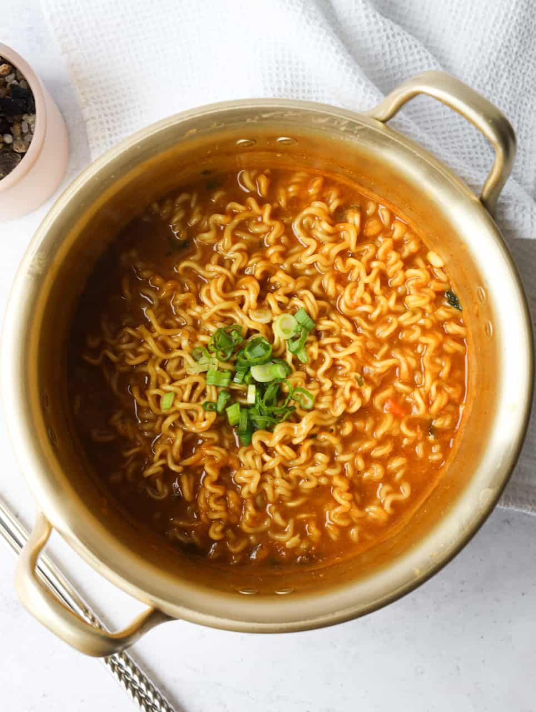

Instant Ramen
Instant Ramen

Description
Instant ramen is a delicious and cheap meal that is easy to make. You can find many different options of instant ramen but for the sake of this Project, we will go ahead and go with the classic Shin Ramen
The great thing about instant ramen is that it can be customized to your liking by adding different ingredients. I recommend always adding an egg and green onions. Add some cheese if you are feeling adventurous! Let me know what you like in your instant ramen after trying out this recipe.
Ingredients
- Shin Ramen
- Boiling water
- Raw egg
- Green onion
Steps
- Get water to a boil
- Open Shin Ramen Packaging and open the sauce and vegetable flake packets. Place both packets and the noodles in the boiling water
- Wait approximately 2 minutes, then crack open the raw egg in the pot along with the other ingredients. Stir the egg while inside
- Wait another 2 minutes, then place the green onions on top and wait another 30 seconds.
- Remove everything from the pot and place in your bowl
- Enjoy!